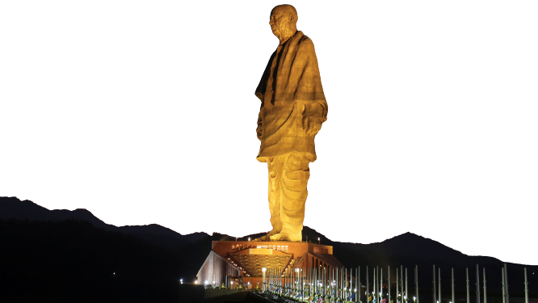
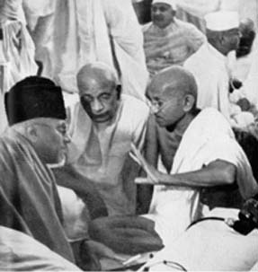

Sardar Vallabhai Patel
Iron man of India
Here is a time line of Patel's life:
- 1875 - Sardar Patel was Born at Nadiad, District Kheda, Gujarat to Laadbai and Jhaverbhai.
- 1893 - Sardar Patel married Jhaverba of Gana Village at age 18.
- 1897 - Sardar Patel passed the Matriculation Exams at the age of 22.
- 1901 - He became a district pleader and started practicing at Godhra Court.
- 1910 - Sardar Patel at the age of 36 enrolled at the Middle Temple Inn in London for Barristership. Completing a 36-month course in 30 months, Sardar Patel finished at the top of his class and received a 50 pounds prize.
- 1913 - Returning to India, he settled in Ahmedabad and became one of the city's most successful barristers.
- 1915 - Became member of Gujarat Sabha which later became Gujarat Prantic Samiti.
- 1917 - He was elected as member in Ahmedabad Municipality on January 5, 1917 from Dariyapur ward by one vote. This was his first foray in an election of a political institution. This election was challenged and cancelled. He was elected again as an uncontested member on May 14, 1917 and became the Chairman of Sanitation Committee.
- 1918 - KHEDA SATYAGRAHA: The Kheda Satyagraha was organised to support the peasants of the Kheda district who were unable to pay the high taxes levied by the British due to crop failure and a plague epidemic.
- 1920 - Congress won most of the municipal seats in Ahmedabad due to Vallabhbhai’s efforts.
- 1923 - FLAG SATYAGRAHA: He led the Nagpur Flag Satyagraha to uphold the right to honour national flag when Mahatma Gandhi was in jail.
- 1924 - ELECTED AS PRESIDENT: Sardar Vallabhbhai Patel won majority for Congress in the Ahmedabad Municipal body and was elected its President.
- 1928 - RESIGNED FROM PRESIDENTSHIP: On April 14, 1928, Sardar resigned from Presidentship of Ahmedabad Municipality following differences over appointment of Chief Officer, I.R. Bhagat who faced allegations of corruption. Sardar Patel never returned to Ahmedabad Municipality in spite of several requests.
- 1930 - DANDI MARCH: Mahatma Gandhi’s historic Salt March to Dandi is one of the landmarks of the Indian Independence Movement. Sardar Patel was arrested on March 7, 1930 at Ras village near Anand where he was to deliver a lecture to rouse the conscience of people in favour of the Salt Satyagraha.
- 1931 - PRESIDENT, INDIAN NATIONAL CONGRESS: He became the President of the Indian National Congress in its Karachi session. He praised the martyrs of the Indian freedom struggle - Bhagat Singh, Sukhdev and Rajguru. He remained at the forefront of the party and had a decisive control till independence.
- 1932 - NASIK PRISON: Sardar Patel was shifted from Yervada to Nasik prison. His mother Laadba died when Sardar was in jail.His elder brother Vithalbhai died in 1933 and yet Sardar did not submit to conditions of British authorities for a parole to attend the funeral.
- 1938 - SESSION OF CONGRESS UNDER THE GUIDANCE OF SARDAR PATEL: The Session of Congress was held at Haripura in Surat District under the guidance of Sardar. Subhash Chandra Bose was elected as the President of the Congress.
- 1939 - PRAJAMANDAL CONFERENCE: While attending Prajamandal Conference at Bhavnagar, Sardar was attacked by a minority group near Nagina Masjid, he was rescued but two of his associates were killed.
- 1940 - SARDAR'S ARREST: Arrested in Ahmedabad during the Individual Satyagraha launched to protest for upholding the freedom of speech.
- 1941 - RELEASED FROM PRISON: He was released from prison due to ailment of intestines.
- 1942 - 'Quit India' Resolution was passed by Bombay session of the All India Congress Committee (AICC). On the morning of August 9, 1942 Sardar Patel was detained and sent to Ahmednagar jail and was later released. All the Congress leaders were released for the pre-Independence negotiations after almost three years.
- 15,Aug, 1947 - India achieved independence and Sardar was sworn in as Home Minister and Deputy Prime Minister.
- 9 Nov, 1947 - JUNAGADH DISPUTE: Sardar Patel ignored Lord Mountbatten’s advice to refer Junagadh issue to UNO and persuaded the Government of India to accept the accession of Junagadh State.
- 13 Nov, 1947 - VISITED SOMNATH TEMPLE: Sardar visited Somnath temple in Saurashtra. Resolved to rebuild it with public funds.
- 24 Sept, 1948 - OPERATION POLO: Successfully executed Operation Polo (Police action) in Hyderabad and Nizam acceded Hyderabad into the Indian Union.
- 15 Dec, 1950 - Breathed his last in Mumbai.
Sardar Patel took his last breath at 9:37 AM, in Mumbai. Cremated in Sonapur (Marine Lines, Mumbai).
His ashes were immersed in holy confluence at Prayag ON Dec 28th.

Azad, Sardar Patel, and Gandhi (from left) at
an AICC meeting in Bombay, 1940